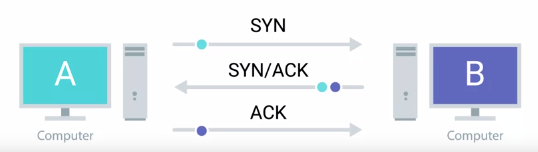

CONTROL FLAGS
TCP CONTROL FLAGS:URG : (urgent) A value of one here indicates that the segment is considered urgent and the urgent pointer field has more data about this.
ACK : (acknowledge) A value of one in this field means that the acknowledgement number field should be examined.
PSH : (push) The transmitting device wants the recieving device to push currently-buffered data to the application on the recieving end as soon as possible.
RST : (reset) One of the sides in a TCP connection hasn't been able to properly recover from a series of missing or malformed segments.
SYN : (synchronise) It's used when first establishing a TCP connection and makes sure the recieving end knows to examine the sequence number field.
FIN : (finish) When this flag is set to a value 1, it means the transmitting computer doesn't have any more data to send and the connection can be closed.
THE THREE WAY HANDSHAKE :

Handshake : A way for two devices to ensure that they are speaking the same protocol .
FOUR WAY HANDSHAKE :
SOCKET :
The instantiation of an end-point in a potential TCP connection.
Socket state:
LISTEN - Ready and listening
SYN_SENT - Synchronisation has been sent but connection not established (client-side)
SYN_RECEIVED - A socket previously in listen state has received a synchronization req and sent back a SYN/ACK
ESTABLISHED - Connection UP
FIN_WAIT - FIN sent but ACK not received
CLOSE_WAIT - Application has been closed on TCP layer , but hasnt get relieved of that socket
CLOSE - Connection fully terminated
Connection-oriented Protocol:
Establishes a connection, and uses this to ensure that all data has been properly transmitted. like TCP
Connection-less protocol : ex: UDP
FIREWALL:
A device blocks traffic that meets certain criteria
Security